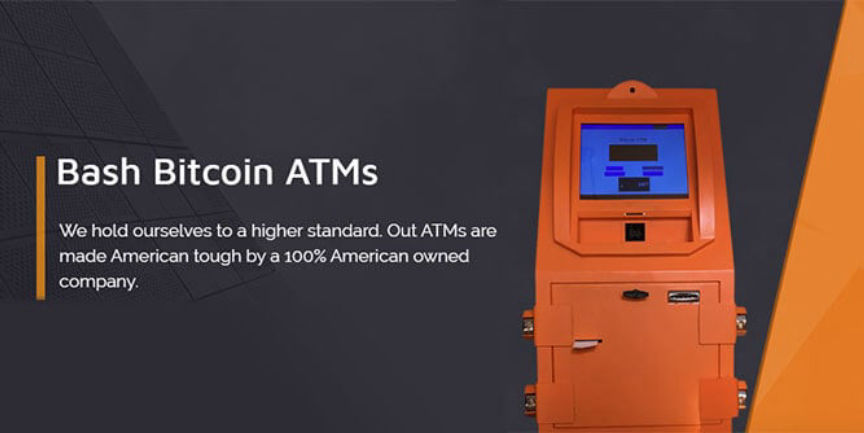
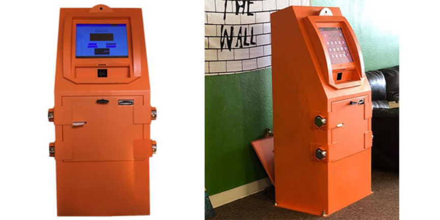
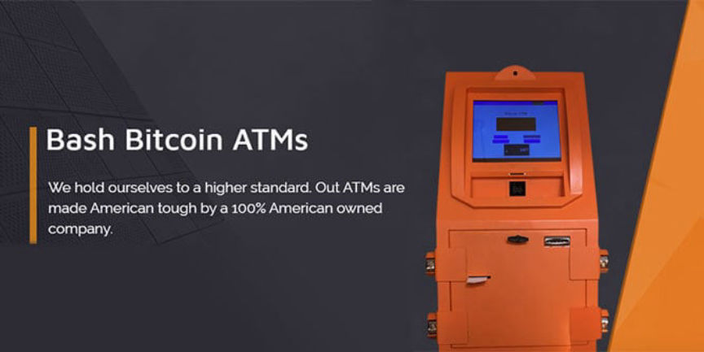
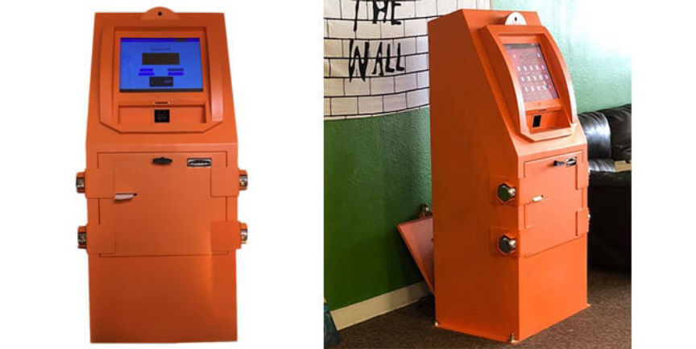

CEO of a Bitcoin ATM Company Indicted for Money Laundering
~4 min read | Published on 2020-12-30, tagged Bitcoin, General-News, Indicted, Money-Laundering using 952 words.
The CEO of a Bitcoin ATM company laundered money through LocalBitcoins.com and elsewhere, according to a recently unsealed indictment.
The United States Department of Justice unsealed an indictment against Brannen Mehaffey, the CEO of BASH Bitcoin ATMs. The indictment accuses Mehaffey of seven counts of money laundering as well as one count of structuring financial transactions.
Included in the indictment is information about the victim of a fraud scheme directly linked to Mehaffey. Between December 2018 and February 2019, one victim lost $125,000. The funds traced to an account controlled by one of Mehaffey’s companies. One year later, another victim transferred $7,370 to an controlled by Mehaffey. It is unclear how these transactions related to the money laundering and structuring charges in the indictment.

Mehaffey, according to the indictment, specialized in the exchange of virtual currency for cash. He controlled a Bitcoin ATM company called BASH with units in more than 20 locations throughout Texas, according to the company’s now-inaccessible website. Locations hosting his ATMs included computer repair companies, smoke shops, and a strip club, according to the indictment.
BASH advertises Bitcoin ATMs “that could withstand sledgehammer and crowbar abuse for at least 30 minutes without any being compromised.” Here is a copy of an old description of the company’s services:
We hold ourselves to a higher standard. Our ATMs are made American tough by a 100% American owned company. We have deployed over 20+ ATMs and throughout Texas and now we’re currently looking to expand nationally.
We noticed it was too easy to compromise or destroy every other Bitcoin ATM on the market. So, we knew we had to set the bar higher. The goal was to build a chassis that could withstand sledgehammer and crowbar abuse for at least 30 minutes without any being compromised.
The BEAST model looks mean because it is mean. With 6 hardened circular safety locks, 4x thicker metal used for the chassis (as compared to the competition), electronics mounted to vibration dampening materials, and metal straps for strength and resistance to multiple physical attacks. We have built the baddest, toughest, meanest bitcoin ATM on the planet.
As the popularity of Bitcoin ATMs grows, so does the number of thieves looking for a quick score. The majority of competitors’ hardware can be compromised and cracked open with 2 carefully placed swings of a sledgehammer purchased at any hardware store or Walmart. The hardware looks frail — and that ultimately acts as an invitation to thieves.
However, when thieves look at the BEAST, they are looking at the biggest, meanest, toughest ATM on the market. The message is clear: DON’T WASTE YOUR TIME!
Many of the stores that host our equipment chose BASH ATMs to make a passive stream of income without having the risk of a frail Bitcoin ATM. They want to keep their property and employees safe and their investment secured.
Mehaffey also offered Bitcoin-for-cash services on Craigslist and LocalBitcoins.com. According to the indictment, his listings instructed users not to share more information than necessary. “What you do with bitcoin is your business and not mine. Please do not speak how you use it.”

Between January 2018 and March 2020, Mehaffey transferred more than $4,000,000 through bank accounts he controlled. It is unclear how much money came from the money laundering scheme.
Counts 1-7 of the indictment are virtually identical except for the date and the value of the transaction. Below is a copy of the first count with emphasis added by this author:
On or about March 12, 2020, in the District of Arizona and elsewhere, Mehaffey, with the intent to conceal and disguise the nature, location, source, ownership, and control of property believed to be the proceeds of specified unlawful activity, and with the intent to avoid a transaction reporting requirement under federal law, did knowingly conduct and attempt to conduct a financial transaction affecting interstate or foreign commerce in any way or degree, in that he transmitted bitcoin in exchange for property represented by a law enforcement officer to be proceeds of specified unlawful activity, to wit: $8,000 in U.S. currency, plus an additional $13,000 in U.S. currency which was deposited pursuant to his directions by different individuals (at multiple Arizona 28 branches) of BBV A Compass Bank.
In other words, undercover federal agents contacted Mehaffey about conducting a transaction with him. They provided Mehaffey with information about the source of the cash they wanted to exchange for Bitcoin. Specifically, investigators represented the cash as the proceeds of unlawful activity. Despite knowing the criminal origin of the money, Mehaffey allegedly exchanged it for Bitcoin.
The indictment lists seven separate encounters between Mehaffey and federal law enforcement officers wherein Mehaffey exchanged their cash for Bitcoin.
Additionally, Mehaffey allegedly attempted to direct the structuring of cash transactions at banks and other financial institutions in Arizona and:
did knowingly cause and attempt to cause each domestic financial institution to fail to file a Currency Transaction Report all while violating another law of the United States and as part of a pattern of illegal activity involving more than $100,000 in 12 months.
[img=]The indictment listed the transactions that contributed to the structuring charge.[/img]
Under the Bank Secrecy Act, banks and other financial institutions must file a specific report to the IRS about any transaction over $10,000. According to the government, this requirement helps the IRS investigate money launderers, among other things. It is a violation of federal law to intentionally split a large transaction into multiple parts in an attempt to avoid triggering the creation of a currency transaction report.
The indictment lists nine transactions between $2,000 and $9,900 as a part of Mehaffey’s attempt to structure financial transactions.
Indictment (pdf) (html)
Arrest Warrant (pdf) (html)
The United States Department of Justice unsealed an indictment against Brannen Mehaffey, the CEO of BASH Bitcoin ATMs. The indictment accuses Mehaffey of seven counts of money laundering as well as one count of structuring financial transactions.
Included in the indictment is information about the victim of a fraud scheme directly linked to Mehaffey. Between December 2018 and February 2019, one victim lost $125,000. The funds traced to an account controlled by one of Mehaffey’s companies. One year later, another victim transferred $7,370 to an controlled by Mehaffey. It is unclear how these transactions related to the money laundering and structuring charges in the indictment.

BASH ATMs are advertised as more secure than other ATMs on the market
Mehaffey, according to the indictment, specialized in the exchange of virtual currency for cash. He controlled a Bitcoin ATM company called BASH with units in more than 20 locations throughout Texas, according to the company’s now-inaccessible website. Locations hosting his ATMs included computer repair companies, smoke shops, and a strip club, according to the indictment.
BASH advertises Bitcoin ATMs “that could withstand sledgehammer and crowbar abuse for at least 30 minutes without any being compromised.” Here is a copy of an old description of the company’s services:
We hold ourselves to a higher standard. Our ATMs are made American tough by a 100% American owned company. We have deployed over 20+ ATMs and throughout Texas and now we’re currently looking to expand nationally.
We noticed it was too easy to compromise or destroy every other Bitcoin ATM on the market. So, we knew we had to set the bar higher. The goal was to build a chassis that could withstand sledgehammer and crowbar abuse for at least 30 minutes without any being compromised.
The BEAST model looks mean because it is mean. With 6 hardened circular safety locks, 4x thicker metal used for the chassis (as compared to the competition), electronics mounted to vibration dampening materials, and metal straps for strength and resistance to multiple physical attacks. We have built the baddest, toughest, meanest bitcoin ATM on the planet.
As the popularity of Bitcoin ATMs grows, so does the number of thieves looking for a quick score. The majority of competitors’ hardware can be compromised and cracked open with 2 carefully placed swings of a sledgehammer purchased at any hardware store or Walmart. The hardware looks frail — and that ultimately acts as an invitation to thieves.
However, when thieves look at the BEAST, they are looking at the biggest, meanest, toughest ATM on the market. The message is clear: DON’T WASTE YOUR TIME!
Many of the stores that host our equipment chose BASH ATMs to make a passive stream of income without having the risk of a frail Bitcoin ATM. They want to keep their property and employees safe and their investment secured.
Mehaffey also offered Bitcoin-for-cash services on Craigslist and LocalBitcoins.com. According to the indictment, his listings instructed users not to share more information than necessary. “What you do with bitcoin is your business and not mine. Please do not speak how you use it.”

It costs $10,000 to become a BASH licensee for a 50/50 split of profits.
Between January 2018 and March 2020, Mehaffey transferred more than $4,000,000 through bank accounts he controlled. It is unclear how much money came from the money laundering scheme.
Counts 1-7 of the indictment are virtually identical except for the date and the value of the transaction. Below is a copy of the first count with emphasis added by this author:
On or about March 12, 2020, in the District of Arizona and elsewhere, Mehaffey, with the intent to conceal and disguise the nature, location, source, ownership, and control of property believed to be the proceeds of specified unlawful activity, and with the intent to avoid a transaction reporting requirement under federal law, did knowingly conduct and attempt to conduct a financial transaction affecting interstate or foreign commerce in any way or degree, in that he transmitted bitcoin in exchange for property represented by a law enforcement officer to be proceeds of specified unlawful activity, to wit: $8,000 in U.S. currency, plus an additional $13,000 in U.S. currency which was deposited pursuant to his directions by different individuals (at multiple Arizona 28 branches) of BBV A Compass Bank.
In other words, undercover federal agents contacted Mehaffey about conducting a transaction with him. They provided Mehaffey with information about the source of the cash they wanted to exchange for Bitcoin. Specifically, investigators represented the cash as the proceeds of unlawful activity. Despite knowing the criminal origin of the money, Mehaffey allegedly exchanged it for Bitcoin.
The indictment lists seven separate encounters between Mehaffey and federal law enforcement officers wherein Mehaffey exchanged their cash for Bitcoin.
Additionally, Mehaffey allegedly attempted to direct the structuring of cash transactions at banks and other financial institutions in Arizona and:
[img=]The indictment listed the transactions that contributed to the structuring charge.[/img]
Under the Bank Secrecy Act, banks and other financial institutions must file a specific report to the IRS about any transaction over $10,000. According to the government, this requirement helps the IRS investigate money launderers, among other things. It is a violation of federal law to intentionally split a large transaction into multiple parts in an attempt to avoid triggering the creation of a currency transaction report.
The indictment lists nine transactions between $2,000 and $9,900 as a part of Mehaffey’s attempt to structure financial transactions.
Indictment (pdf) (html)
Arrest Warrant (pdf) (html)